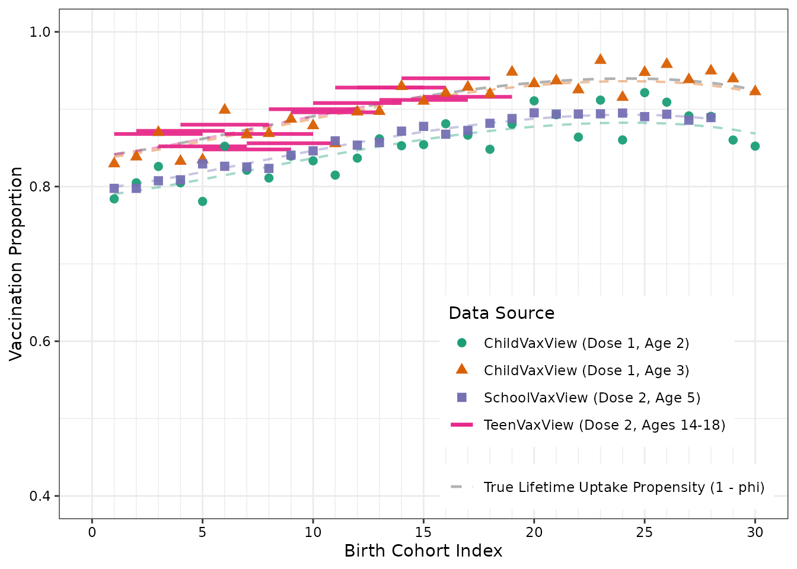
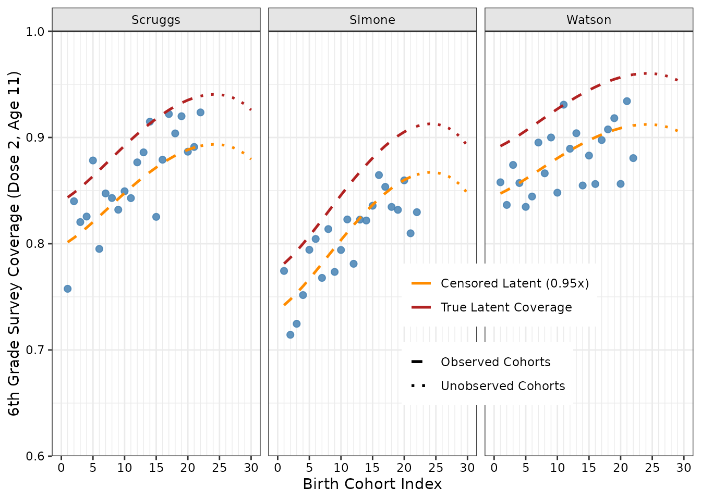
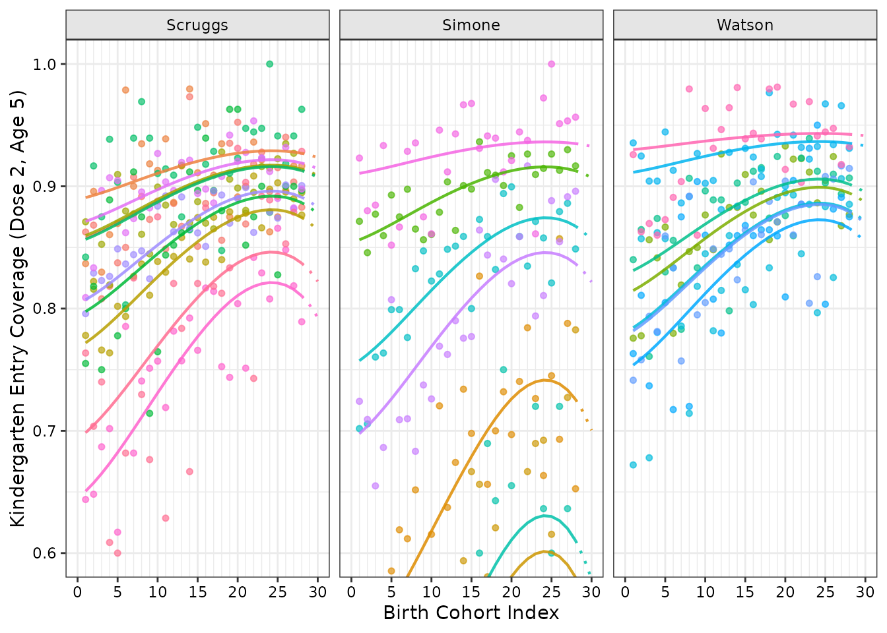

Overview of the Synthetic Simulation Universe
imuGAP provides four bundled datasets
(locations_sim, observations_sim,
populations_sim, and target_sim) alongside
latent parameter fixtures (latent_params_sim,
fit_sim, predict_sim) that reflect an
underlying vaccination process model and surveillance streams across a
multi-resolution hierarchical population structure.
In this scenario:
- A single State is partitioned into 3 Counties (Scruggs, Simone, Watson), which contain a total of 24 elementary Schools (10 in Scruggs, 7 in Simone, 7 in Watson).
- The vaccine requires a 2-dose sequential regimen (e.g. MMR, with dose 1 recommended at age 1 and dose 2 eligible at age 4).
- Observations are gathered from diverse empirical surveillance
streams:
- ChildVaxView / NIS-Child: State-level single-cohort point estimates at ages 2 and 3 for dose 1.
- SchoolVaxView: State-level kindergarten entry surveys (dose 2 at age 5).
- TeenVaxView: State-level multi-cohort cross-sectional survey snapshots spanning ages 14 to 18 (dose 2).
- County Sixth-Grade Surveys: Right-censored dose 2 coverage at age 11 across all 3 counties.
- School Kindergarten Entry Records: Annual kindergarten entry surveys for dose 2 at age 5 across all 24 individual schools.
1. Inspecting the Bundled Datasets
Location Hierarchy (locations_sim)
The locations_sim dataset defines the spatial tree
structure. Every location node must have either 0 offspring (a leaf
node, such as a school) or strictly greater than 1 offspring
(
children).
data("locations_sim", package = "imuGAP")
head(locations_sim)
#> loc_id population parent_id
#> <char> <num> <char>
#> 1: State 2895.1333 <NA>
#> 2: Scruggs 1527.7000 State
#> 3: Simone 746.6333 State
#> 4: Watson 620.8000 State
#> 5: Chickadee Elementary 147.8333 Scruggs
#> 6: Nuthatch Academy 368.5333 Scruggs
nrow(locations_sim)
#> [1] 28You can validate and canonicalize the location tree using
canonicalize_locations():
canonical_locations <- canonicalize_locations(locations_sim)
head(canonical_locations)
#> Key: <layer, parent_id, loc_id>
#> loc_id population parent_id layer loc_c_id loc_cp_id
#> <char> <num> <char> <int> <int> <int>
#> 1: State 2895.13333 <NA> 1 1 NA
#> 2: Scruggs 1527.70000 State 2 2 1
#> 3: Simone 746.63333 State 2 3 1
#> 4: Watson 620.80000 State 2 4 1
#> 5: Blue Heron School 115.43333 Scruggs 3 5 2
#> 6: Bluebird Learning Center 49.63333 Scruggs 3 6 2
#> layer_bound
#> <int>
#> 1: 1
#> 2: 1
#> 3: 1
#> 4: 1
#> 5: 1
#> 6: 1canonicalize_locations() introduces:
-
loc_c_idandloc_cp_id: 1-based integer continuous indices for the location and its parent. -
layer: 1-based integer tree depth (1 for State, 2 for County, 3 for School). -
layer_bound: Index slicing offsets used internally by Stan to partition the spatial random effect arrays.
Coverage Observations (observations_sim)
The observations_sim dataset contains the binomial
survey outcomes:
-
obs_id: Unique identifier for each observation. -
loc_id: Location identifier matching a node inlocations_sim. -
positive: Count of vaccinated individuals. -
sample_n: Total sample size (). -
censored:1for right-censored observations,NAfor uncensored observations.
data("observations_sim", package = "imuGAP")
head(observations_sim[, .(obs_id, loc_id, positive, sample_n, censored)])
#> obs_id loc_id positive sample_n censored
#> <int> <char> <num> <int> <num>
#> 1: 1 Chickadee Elementary 135 155 NA
#> 2: 2 Chickadee Elementary 124 152 NA
#> 3: 3 Chickadee Elementary 133 156 NA
#> 4: 4 Chickadee Elementary 127 155 NA
#> 5: 5 Chickadee Elementary 141 155 NA
#> 6: 6 Chickadee Elementary 139 158 NACanonicalizing observations with
canonicalize_observations() assigns continuous 1-based
indices obs_c_id, sorting uncensored records before
censored records for efficient block execution in Stan:
canonical_observations <- canonicalize_observations(observations_sim)
head(canonical_observations)
#> Key: <censored, obs_id>
#> obs_c_id positive sample_n censored obs_id
#> <int> <int> <int> <num> <int>
#> 1: 1 135 155 NA 1
#> 2: 2 124 152 NA 2
#> 3: 3 133 156 NA 3
#> 4: 4 127 155 NA 4
#> 5: 5 141 155 NA 5
#> 6: 6 139 158 NA 6Observation Metadata & Populations
(populations_sim)
The populations table provides essential metadata for
all observations—defining the discrete location, age, cohort, and dose
associated with each survey outcome. Every record in
observations receives one or more entries in
populations:
-
Direct (1:1) observations: A single row with
weight = 1.0maps the observation directly to a discrete population slice (such as a single-cohort kindergarten survey at age 5). -
Mixed observations: When a survey mixes multiple
underlying populations (such as cross-sectional surveys spanning
multiple age groups or cohorts),
populationscaptures this mixture using multiple rows sharing the sameobs_id, each assigned a fractional weight (e.g. equal weights or demographic population shares summing to 1.0).
data("populations_sim", package = "imuGAP")
head(populations_sim)
#> obs_id loc_id cohort age dose weight
#> <int> <char> <int> <int> <int> <num>
#> 1: 1 Chickadee Elementary 1 5 2 1
#> 2: 2 Chickadee Elementary 2 5 2 1
#> 3: 3 Chickadee Elementary 3 5 2 1
#> 4: 4 Chickadee Elementary 4 5 2 1
#> 5: 5 Chickadee Elementary 5 5 2 1
#> 6: 6 Chickadee Elementary 6 5 2 1For single-cohort kindergarten surveys, obs_id has a 1:1
mapping with weight = 1.0. For multi-age surveys (such as
TeenVaxView at obs_id == 761), multiple rows describe the
mixture across ages:
# TeenVaxView-style observation spanning ages 14 to 18
observations_sim[
obs_id == 761,
.(obs_id, loc_id, positive, sample_n, age_min, age_max, dose)
]
#> obs_id loc_id positive sample_n age_min age_max dose
#> <int> <char> <num> <int> <int> <int> <int>
#> 1: 761 State 217 250 14 19 2
# Corresponding population metadata with distributed weights summing to 1.0
populations_sim[obs_id == 761]
#> obs_id loc_id cohort age dose weight
#> <int> <char> <int> <int> <int> <num>
#> 1: 761 State 5 14 2 0.2
#> 2: 761 State 4 15 2 0.2
#> 3: 761 State 3 16 2 0.2
#> 4: 761 State 2 17 2 0.2
#> 5: 761 State 1 18 2 0.2You can validate and canonicalize populations using
canonicalize_populations():
canonical_populations <- canonicalize_populations(
populations_sim, observations_sim, locations_sim
)
head(canonical_populations)
#> Key: <obs_c_id, loc_c_id, cohort, age, dose>
#> obs_id loc_id cohort age dose weight obs_c_id loc_c_id
#> <int> <char> <int> <int> <int> <num> <int> <int>
#> 1: 1 Chickadee Elementary 1 5 2 1 1 8
#> 2: 2 Chickadee Elementary 2 5 2 1 2 8
#> 3: 3 Chickadee Elementary 3 5 2 1 3 8
#> 4: 4 Chickadee Elementary 4 5 2 1 4 8
#> 5: 5 Chickadee Elementary 5 5 2 1 5 8
#> 6: 6 Chickadee Elementary 6 5 2 1 6 8
#> range_start
#> <int>
#> 1: 1
#> 2: 2
#> 3: 3
#> 4: 4
#> 5: 5
#> 6: 62. Canonicalization Rules and Validation Diagnostics
imuGAP enforces strict structural assertions to
safeguard model fitting against corrupted or incompatible inputs:
Observation Binomial Count Consistency
If an observation has positive > sample_n,
canonicalize_observations() raises an informative
error:
invalid_obs <- copy(observations_sim[, .(obs_id, loc_id, positive, sample_n, censored)])
invalid_obs[1, positive := sample_n + 10]
tryCatch(
canonicalize_observations(invalid_obs),
error = function(e) message("Caught expected error: ", e$message)
)
#> Caught expected error: `observations` column 'positive' must be <= 'sample_n'; found 1 invalid row(s) with obs_id: 1; use `subset(observations, positive > sample_n)` to resolve invalid entriesHierarchy Invariant Enforcement
If duplicate location IDs exist, or single-child chains are
introduced, canonicalize_locations() rejects the tree:
invalid_locs <- rbind(
locations_sim,
data.frame(loc_id = "Scruggs", parent_id = "State"),
fill = TRUE
)
tryCatch(
canonicalize_locations(invalid_locs),
error = function(e) message("Caught expected error: ", e$message)
)
#> Caught expected error: `locations` column 'loc_id' must contain unique values; found 1 duplicate(s): Scruggs; use `subset(locations, duplicated(loc_id) | duplicated(loc_id, fromLast = TRUE))` to resolve invalid entries3. Visualizing the Synthetic Observation Streams
The following figures illustrate empirical coverage rates across each
observation stream compared against underlying true data-generating
parameters (latent_params_sim).
State-Level Observation Streams
Show plot code
data("latent_params_sim", package = "imuGAP")
state_obs <- copy(observations_sim[loc_id == "State"])
state_obs[, source := factor(
fcase(
dose == 1 & age_min == 2, "ChildVaxView (Dose 1, Age 2)",
dose == 1 & age_min == 3, "ChildVaxView (Dose 1, Age 3)",
age_min == 5, "SchoolVaxView (Dose 2, Age 5)",
default = "TeenVaxView (Dose 2, Ages 14-18)"
),
levels = c(
"ChildVaxView (Dose 1, Age 2)",
"ChildVaxView (Dose 1, Age 3)",
"SchoolVaxView (Dose 2, Age 5)",
"TeenVaxView (Dose 2, Ages 14-18)"
)
)]
state_obs[, obs_prop := positive / sample_n]
single_cohort_obs <- state_obs[is.na(age_max) | age_max == age_min + 1L]
multi_cohort_obs <- copy(state_obs[!is.na(age_max) & age_max > age_min + 1L])
multi_cohort_obs[, cohort_max := cohort_min + (age_max - 1L) - age_min]
latent_state <- data.table(
cohort_min = seq_along(latent_params_sim$phi_state),
propensity = 1 - latent_params_sim$phi_state
)
n_c <- length(latent_params_sim$phi_state)
skv_max_cohort <- max(state_obs[age_min == 5, cohort_min])
tvv_max_cohort <- max(multi_cohort_obs$cohort_min)
latent_curves <- rbindlist(list(
data.table(
cohort_min = seq_len(n_c),
latent_cov = (1 - latent_params_sim$phi_state) *
latent_params_sim$uptake[2, 1],
source = "ChildVaxView (Dose 1, Age 2)"
),
data.table(
cohort_min = seq_len(n_c),
latent_cov = (1 - latent_params_sim$phi_state) *
latent_params_sim$uptake[3, 1],
source = "ChildVaxView (Dose 1, Age 3)"
),
data.table(
cohort_min = seq_len(skv_max_cohort),
latent_cov = (1 - latent_params_sim$phi_state[seq_len(skv_max_cohort)]) *
latent_params_sim$uptake[5, 2],
source = "SchoolVaxView (Dose 2, Age 5)"
),
data.table(
cohort_min = seq_len(tvv_max_cohort),
latent_cov = (1 - latent_params_sim$phi_state[seq_len(tvv_max_cohort)]) *
mean(latent_params_sim$uptake[14:18, 2]),
source = "TeenVaxView (Dose 2, Ages 14-18)"
)
))
latent_curves[, source := factor(source, levels = levels(state_obs$source))]
ggplot() +
geom_line(
data = latent_state,
aes(x = cohort_min, y = propensity, linetype = "True Lifetime Uptake Propensity (1 - phi)"),
color = "gray40", linewidth = 0.8, alpha = 0.5
) +
geom_line(
data = latent_curves,
aes(x = cohort_min, y = latent_cov, color = source),
linetype = "dashed", linewidth = 0.7, alpha = 0.4
) +
geom_segment(
data = multi_cohort_obs,
aes(x = cohort_min, xend = cohort_max, y = obs_prop, yend = obs_prop, color = source),
linewidth = 1.1, alpha = 0.95
) +
geom_point(
data = single_cohort_obs,
aes(x = cohort_min, y = obs_prop, color = source, shape = source),
size = 2.4, alpha = 0.95
) +
scale_x_continuous(breaks = seq(0, 30, by = 5), minor_breaks = seq(1, 30, by = 1)) +
coord_cartesian(xlim = c(0, 30), ylim = c(0.4, 1.0)) +
scale_linetype_manual(
name = NULL,
values = c("True Lifetime Uptake Propensity (1 - phi)" = "dashed")
) +
scale_color_brewer(name = "Data Source", palette = "Dark2") +
scale_shape_manual(
name = "Data Source",
values = c(
"ChildVaxView (Dose 1, Age 2)" = 16,
"ChildVaxView (Dose 1, Age 3)" = 17,
"SchoolVaxView (Dose 2, Age 5)" = 15,
"TeenVaxView (Dose 2, Ages 14-18)" = 18
)
) +
guides(
color = guide_legend(
override.aes = list(
shape = c(16, 17, 15, NA),
linetype = c("blank", "blank", "blank", "solid"),
linewidth = c(0, 0, 0, 1.1),
alpha = 1
)
),
shape = "none"
) +
theme(
legend.position = "inside",
legend.position.inside = c(0.98, 0.02),
legend.justification.inside = c(1, 0)
) +
labs(x = "Birth Cohort Index", y = "Vaccination Proportion")
County-Level Right-Censored Surveillance
imuGAP supports observations at intermediate spatial
resolutions as well as right-censored surveillance streams.
In public health surveillance, records often report composite vaccine series completion (for example, whether a student has received all required middle school entry immunizations) rather than tracking a specific vaccine in isolation. Because an individual who completed the full multi-vaccine series has necessarily received the target vaccine, the observed series completion rate acts as a lower bound on the target vaccine’s true coverage (true coverage observed proportion).
imuGAP natively models right-censored observations:
- In
observations, you mark right-censored survey records withcensored = 1(and uncensored records withNA). - During Bayesian model fitting, the likelihood accounts for the right-censoring mechanism, ensuring that lower-bound surveillance records accurately inform the latent process without biasing coverage trajectories downward.
In this simulation universe, routine county-wide middle school entry tallies (dose 2 at age 11) across all three counties represent right-censored surveillance streams:
Show plot code
county_names <- names(latent_params_sim$off_cnty)
county_obs <- copy(observations_sim[loc_id %in% county_names])
county_obs[, obs_prop := positive / sample_n]
max_obs_cohort <- max(county_obs$cohort_min)
n_cohorts <- length(latent_params_sim$phi_state)
county_latent <- rbindlist(lapply(names(latent_params_sim$off_cnty), function(cnty) {
cohorts <- seq_len(n_cohorts)
c_idx <- match(cnty, names(latent_params_sim$off_cnty))
offset <- latent_params_sim$off_cnty[c_idx]
phi_shifted <- plogis(qlogis(latent_params_sim$phi_state[cohorts]) + offset)
cov_true <- (1 - phi_shifted) * latent_params_sim$uptake[11, 2]
cov_censored <- cov_true * latent_params_sim$censor_reduction
data.table(
loc_id = cnty,
cohort_min = cohorts,
latent_cov = cov_true,
latent_cov_censored = cov_censored
)
}))
county_latent_obs <- county_latent[cohort_min <= max_obs_cohort]
county_latent_unobs <- county_latent[cohort_min >= max_obs_cohort]
ggplot() +
geom_point(
data = county_obs,
aes(x = cohort_min, y = obs_prop),
color = "steelblue", size = 2, alpha = 0.85
) +
geom_line(
data = county_latent_obs,
aes(
x = cohort_min,
y = latent_cov,
color = "True Latent Coverage",
linetype = "Observed Cohorts"
),
linewidth = 0.9
) +
geom_line(
data = county_latent_obs,
aes(
x = cohort_min,
y = latent_cov_censored,
color = "Censored Latent (0.95x)",
linetype = "Observed Cohorts"
),
linewidth = 0.9
) +
geom_line(
data = county_latent_unobs,
aes(
x = cohort_min,
y = latent_cov,
color = "True Latent Coverage",
linetype = "Unobserved Cohorts"
),
linewidth = 0.9
) +
geom_line(
data = county_latent_unobs,
aes(
x = cohort_min,
y = latent_cov_censored,
color = "Censored Latent (0.95x)",
linetype = "Unobserved Cohorts"
),
linewidth = 0.9
) +
facet_wrap(~loc_id) +
scale_x_continuous(breaks = seq(0, 30, by = 5), minor_breaks = seq(1, 30, by = 1)) +
scale_y_continuous(expand = c(0, 0)) +
coord_cartesian(xlim = c(0, 30), ylim = c(0.6, 1.0)) +
scale_color_manual(
name = NULL,
values = c("True Latent Coverage" = "firebrick", "Censored Latent (0.95x)" = "darkorange")
) +
scale_linetype_manual(
name = NULL,
values = c("Observed Cohorts" = "dashed", "Unobserved Cohorts" = "dotted")
) +
guides(
color = guide_legend(order = 1, override.aes = list(linewidth = 0.9, linetype = "solid")),
linetype = guide_legend(order = 2, override.aes = list(linewidth = 0.9, color = "black"))
) +
theme(
legend.position = "inside",
legend.position.inside = c(0.85, 0.12),
legend.justification.inside = c(1, 0)
) +
labs(x = "Birth Cohort Index", y = "6th Grade Survey Coverage (Dose 2, Age 11)")
School Kindergarten Enrollment Records
The following plot illustrates school-level kindergarten entry records (dose 2 at age 5) across all elementary schools grouped by county, comparing empirical survey counts against the underlying school-specific latent coverage curves:
Show plot code
canonical_locations <- canonicalize_locations(locations_sim)
sch_locs <- canonical_locations[layer == 3]
n_cohorts <- length(latent_params_sim$phi_state)
off_c <- latent_params_sim$off_cnty
off_s <- latent_params_sim$off_sch
uptake_val <- latent_params_sim$uptake[5, 2]
school_latent <- rbindlist(lapply(seq_len(nrow(sch_locs)), function(i) {
sch <- sch_locs$loc_id[i]
cnty <- sch_locs$parent_id[i]
tot_off <- unname(off_c[cnty]) + unname(off_s[sch])
cohorts <- seq_len(n_cohorts)
phi_shifted <- plogis(qlogis(latent_params_sim$phi_state[cohorts]) + tot_off)
cov_true <- (1 - phi_shifted) * uptake_val
data.table(loc_id = sch, county_id = cnty, cohort_min = cohorts, latent_cov = cov_true)
}))
sch_obs <- copy(observations_sim[loc_id %in% sch_locs$loc_id])
sch_obs[, obs_prop := positive / sample_n]
sch_obs <- merge(sch_obs, sch_locs[, .(loc_id, county_id = parent_id)], by = "loc_id")
max_obs_cohort <- max(sch_obs$cohort_min)
school_latent_obs <- school_latent[cohort_min <= max_obs_cohort]
school_latent_unobs <- school_latent[cohort_min >= max_obs_cohort]
ggplot() +
geom_point(
data = sch_obs,
aes(x = cohort_min, y = obs_prop, color = loc_id),
size = 1.3, alpha = 0.65
) +
geom_line(
data = school_latent_obs,
aes(
x = cohort_min,
y = latent_cov,
group = loc_id,
color = loc_id,
linetype = "Observed Cohorts"
),
linewidth = 0.75, alpha = 0.85
) +
geom_line(
data = school_latent_unobs,
aes(
x = cohort_min,
y = latent_cov,
group = loc_id,
color = loc_id,
linetype = "Unobserved Cohorts"
),
linewidth = 0.75, alpha = 0.85
) +
facet_wrap(~county_id) +
scale_x_continuous(breaks = seq(0, 30, by = 5), minor_breaks = seq(1, 30, by = 1)) +
coord_cartesian(xlim = c(0, 30), ylim = c(0.6, 1.0)) +
scale_linetype_manual(
name = NULL,
values = c("Observed Cohorts" = "solid", "Unobserved Cohorts" = "dotted")
) +
theme(legend.position = "none") +
labs(
x = "Birth Cohort Index",
y = "Kindergarten Entry Coverage (Dose 2, Age 5)"
)
Summary and Related Vignettes
- For an overview of estimating the underlying process model and predicting coverage, see Getting Started with imuGAP.
- To learn how
imuGAPconfigures and estimates parameters across arbitrary spatial depths, see Flexible Location Layers in imuGAP. - For detailed MCMC convergence checks, trace plots, and parameter inference, see Fit Inspection and Stan Diagnostics.